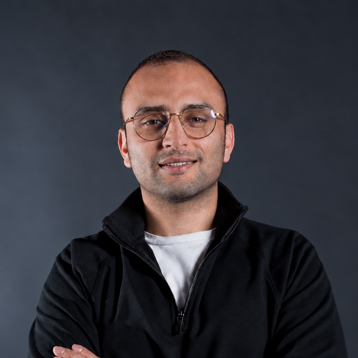
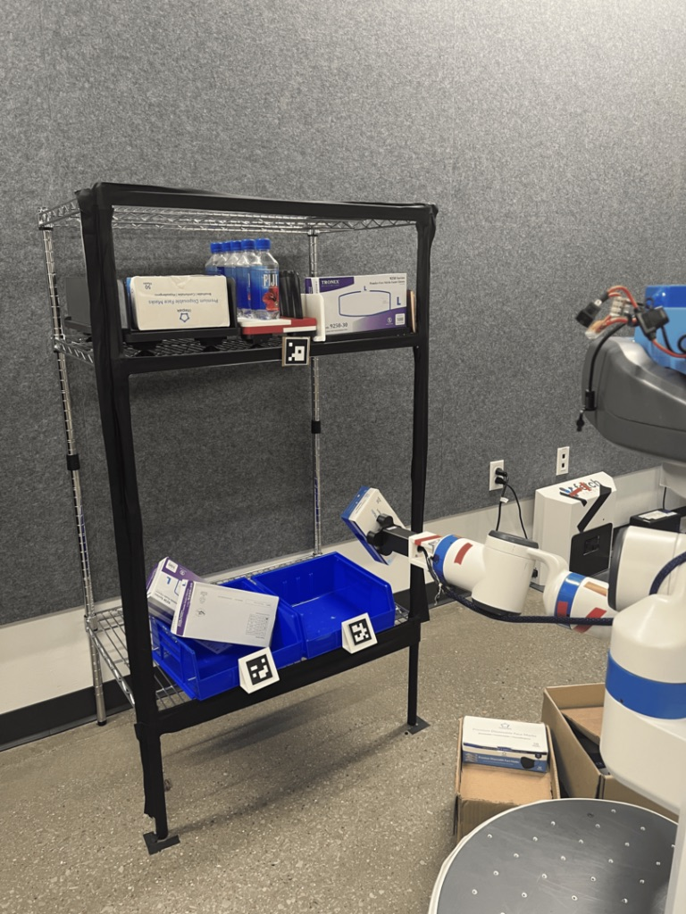
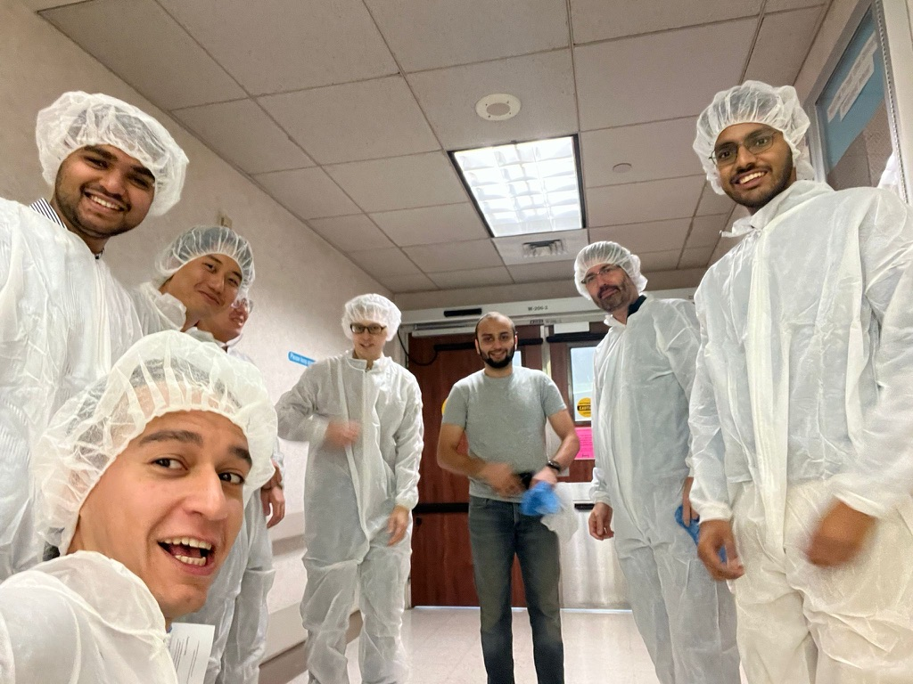
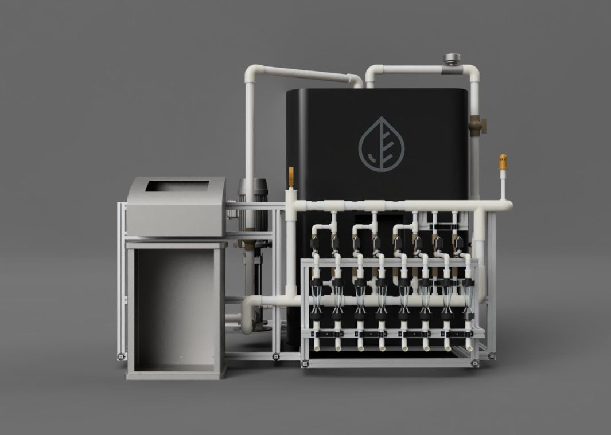
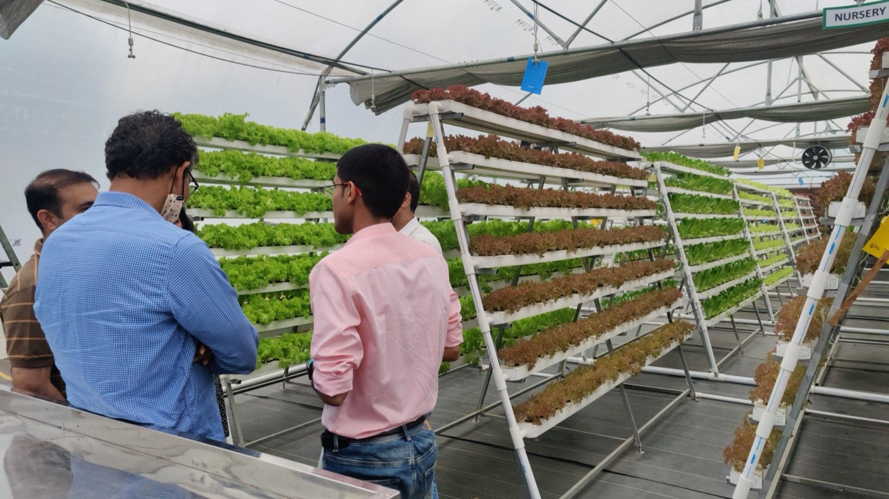
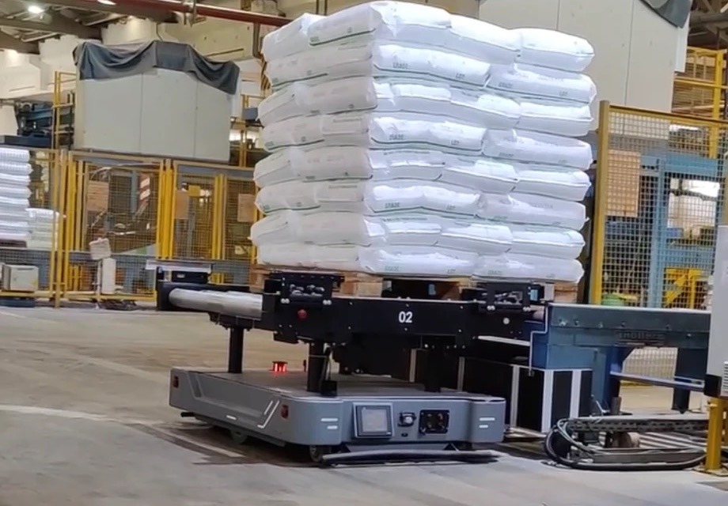
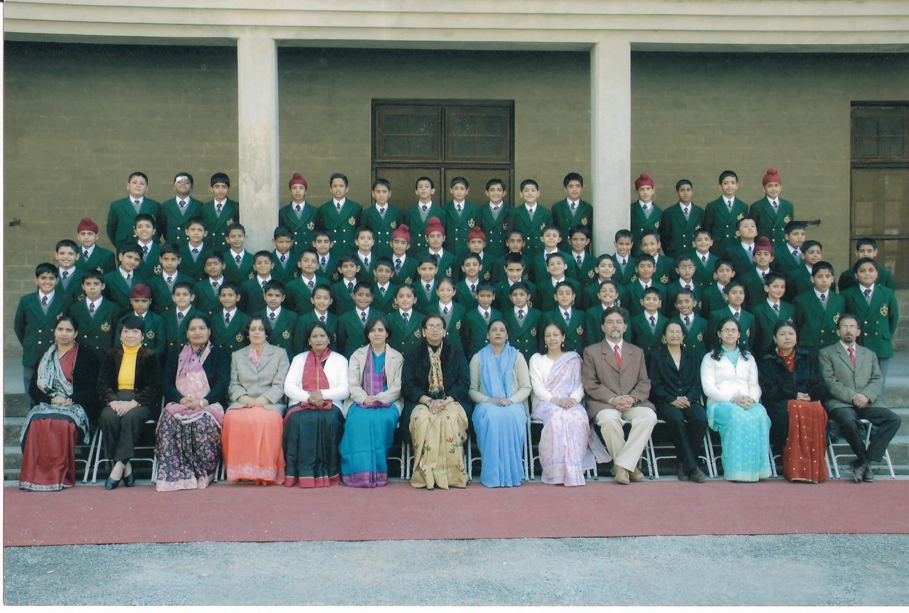

I spend a significant amount of time questioning the status quo and I believe ideas come to those who are in search of them. Thinking about technology, society and economics keeps me sane and listening to varied perspectives keeps it interesting.
What I'm Up To
I'm a research engineer at Skild AI. I joined when we were 11 people. We train large neural networks for robots, building an omni-bodied brain.
Skild AI — one brain, many bodies, doing chores.
Previously
Prior to that I was at the Robotics Institute (RI) at Carnegie Mellon University, where I worked with professor Jeffrey Ichnowski and Zackory Erickson on mobile manipulation and perception in healthcare environments (ORB). I also did some work on agentic robotics before it was cool with professor Jean Oh at the BIG Lab. I co-founded Fambo, an agritech startup, where I led AI and robotics. Before that I was at Addverb, where I led the first ever deployment of a fleet of AMRs in the company's and the country's history. And it all started at ZINE at MNIT Jaipur with professor Rajesh Kumar.
ORB — healthcare robots for the operating room, developed with UPMC.


Fambo — grew to 30+ employees and 2.5M+ ARR in 8 months. Down there you can see our robotic dosing system. It was supposed to be AI powered!


Addverb — the first ever AMR fleet deployment in India.

Where I'm From
I grew up in the foothills of the Himalayas in India, in a small town called Kashipur in the state of Uttarakhand. Proud Old Sherwoodian, went to Sherwood College, Nainital.

Some Things that might interest you
- Listen to Philosophize This! by Stephen West — It's a masterpiece. You're welcome.
- This is hands down the most compressed 0 to 1 video on LLMs on the internet
- If you haven't read the report on microplastics in food, you should (Nat Friedman is a legend)
What I'm Thinking
Lately I've been obsessed with the idea of superintelligence and the future of humanity (It's mind wrecking to think of the sheer possibilities). On a daily basis I keep coming back to the question of how we can make robots truly useful.
If you'd like to discuss, question or poke holes in any of these ideas, feel free to reach out at tanmayagarwal99[at]gmail[dot]com. Always happy to chat.